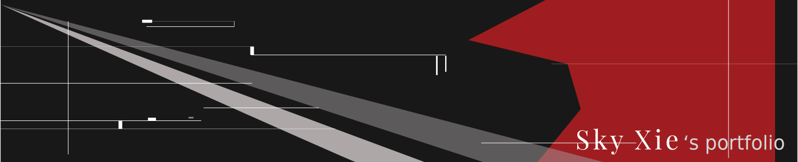
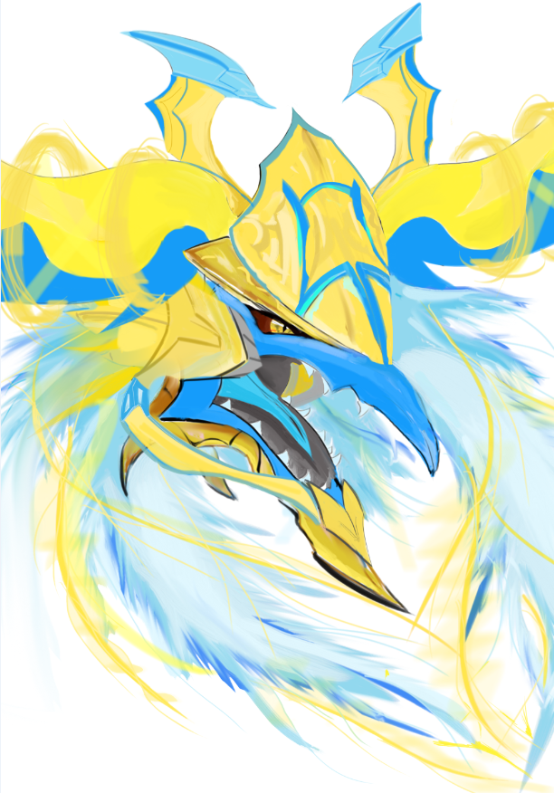
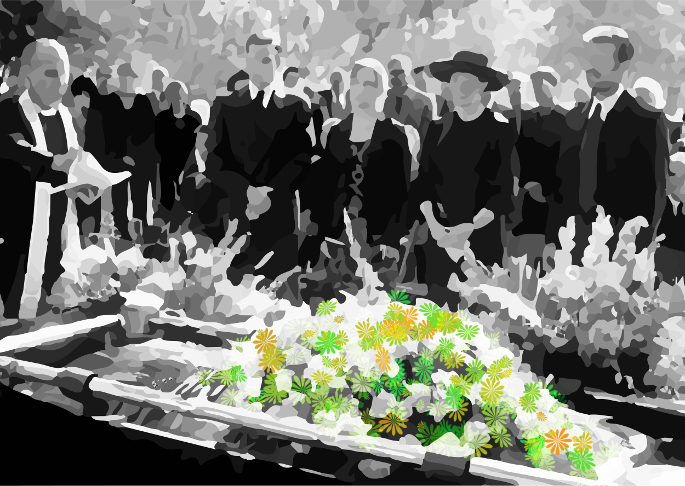
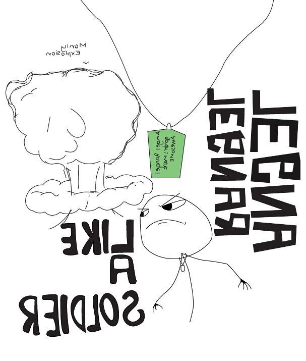
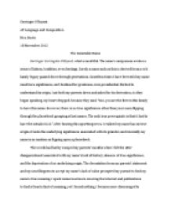
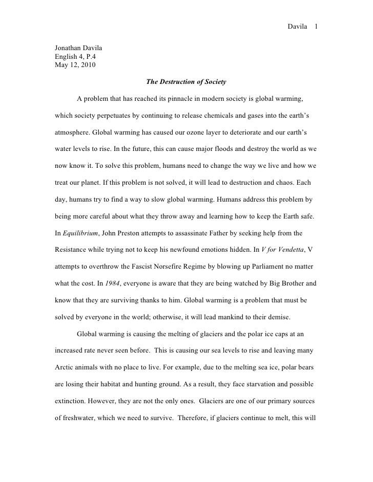
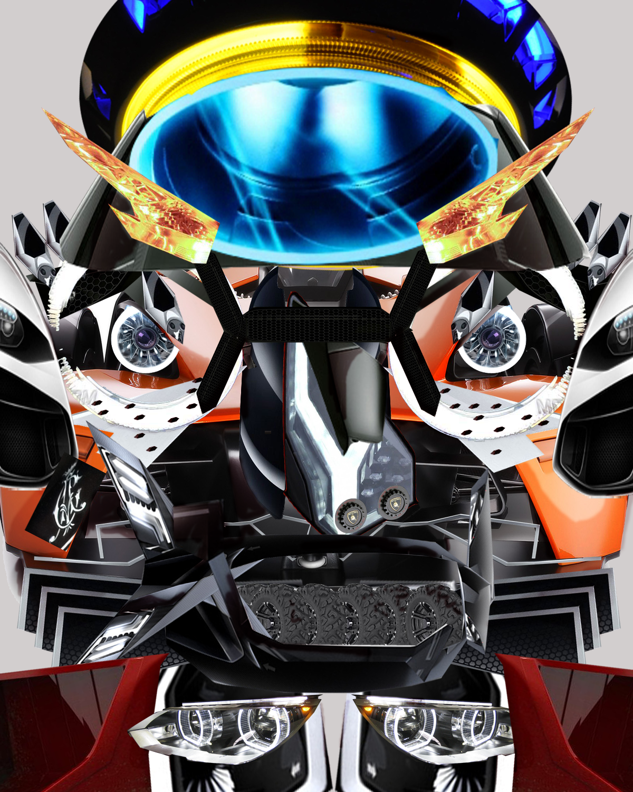
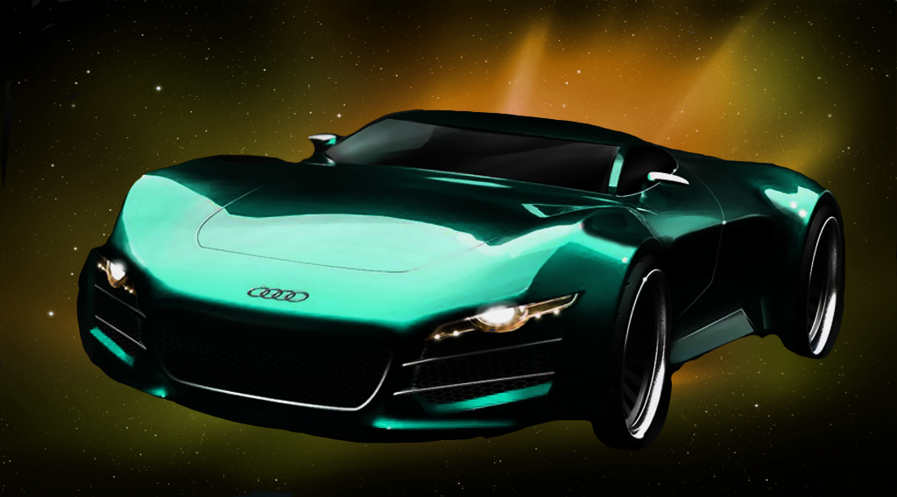

My Works
Scorching Glare

One of the projects I created in my Graphic Design III class, for this assissment we have to brainstorm our ideas and research on other similar artists' work for a better development of the final work,
the image on the right is my final work. For the final work I've decided to only focus on the head of the dragon knight, using various brushes and tools to create the horns and the hairs. The software I choosed to use were Sketchbook Pro
Great Gatsby

One of my English PBL in junior year, for this project we have to create a study guide that contains the analysis of the book "Great Gatsby" by F. Scott Fitzgerald. This is one of the visuals I created
for the study guide.
Freshman year Spring PBL

This is a design for the shirt so everything will be backwards, when it's printed on the shirt it will be displayed in the right way. For this project we have to help other kids that are unwealthy, it's a
collaboration of all freshman DA programs. Since I'm in web and some other group has no members that know how to draw digitally, I've to help other groups on their T-shirt designes, I traced the design they gave me and taught them
the basic use of pen tools for Adobe Illustrator.
Free Write: Loyalty

One of the free writing assignments I wrote in my English 11 class, loyalty is a value easily expressed, but often difficult to uphold. It's a strong bond between people, things
, and events. We have to think about a time when our loyalty is tested, describe the situation and explain our decision. My example was really simple, I bought a second-hand 3ds on Ebay and I was really regret after
being the highest bidder on the item, my loyalty on the contract between I and the seller were tested. In the end I did not buy the 3ds. It's a short 3 paragraph free write, I had a brief introduction on loyalty itself and
then focused on describing the situation from beginning to the end.
Highschool Proficiency Practice Writing

A narrative essay based on the prompt our English teacher gave us. My handwriting confused my teacher so the "v" letter sometimes looks like an "r"(lol). I didn't proof read the writing before
turning it in so the fluency and grammer has lots of issues. Although I do have a strong thesis statement in the essay, decent details and organizations. This practice helped me felt more prepared for the actual writing proficiency test.
"MR.Car"

One of the assignment I did in freshman year, this is the first couple times we were introduced to Adobe Photoshop. We have to find different pieces of images online and put them together to form a human-looking figure. I choosed different parts of automobile, the headlight, tires, doors, etc.
The final artwork looks more like a robot to me but hey, I'm proud of it. This assignment helped us getting a better idea with the different selection tools.
Dino Dino

This was created before the MR.car assignment, only difference is that we're using the objects we found on our own and scan them into the computers. Put them togther into something better I should say. I choosed my phone's camera, my key,
and also a piece of Lego from the Hero Factory series to create a dinosaur, painted the background with the paint brush tool.
A-a-A-audi

Also created with Adobe Photoshop, for this assignment we have to select a picture from the internet, change the color scheme of the object we want using the Hue/Saturation filters and give it a unique background. First we selected
most of the areas we don't want with the magic wond tool and delete them, then we carefully erase the rest with the erase tools.